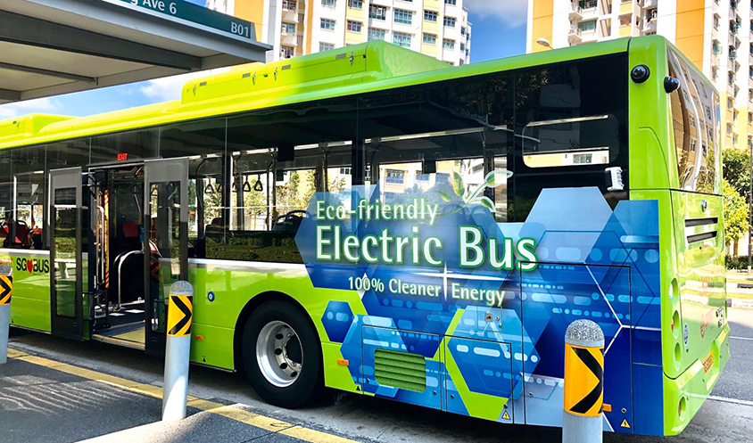

1. Sustainable Urban Planning
Smart urban planning is key to creating well-organized and livable cities. It involves designing cities with proper zoning, efficient land use, and integrated infrastructure. Sustainable planning ensures access to basic services, reduces sprawl, and helps manage urban growth. Green building standards and transit-oriented development can make cities more efficient and eco-friendly. With long-term strategies, cities can grow in ways that benefit both people and the planet.

2. Affordable and Inclusive Housing
Governments and local authorities must invest in affordable, safe, and accessible housing. Public-private partnerships can help finance housing projects for low-income families. Upgrading slums and providing secure land tenure can improve living conditions. Housing policies should be inclusive, addressing the needs of marginalized and vulnerable groups. Ensuring everyone has a place to live is essential for building equitable cities.

3. Efficient and Green Public Transportation
Developing clean, reliable, and accessible public transport can reduce traffic and pollution. Investing in buses, trains, bike lanes, and walkable infrastructure makes cities more connected and sustainable. Affordable fares ensure that all residents, including the poor, can move freely. Green transport options also reduce carbon emissions and energy use. A well-functioning transport system supports economic growth and improves quality of life.
4. Environmental Protection and Green Spaces
Cities must prioritize clean air, water, and waste management to protect public health. Expanding parks and green areas provides space for recreation, reduces heat, and improves air quality. Renewable energy, green roofs, and eco-friendly building practices can lower environmental impact. Community-led recycling and urban farming programs can also promote sustainability. A cleaner urban environment benefits both people and nature.
5. Strengthening Community Resilience and Inclusion
Inclusive policies help ensure that no one is left behind in urban development. Disaster risk reduction strategies, like early warning systems and climate-resilient infrastructure, can protect vulnerable communities. Social programs and local participation empower residents to shape their cities. Supporting education, healthcare, and job opportunities reduces inequality. Resilient and inclusive cities are better prepared to face future challenges.